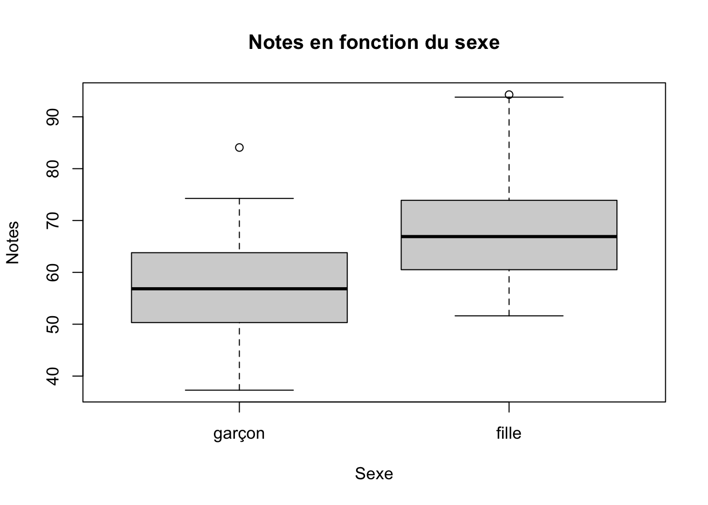
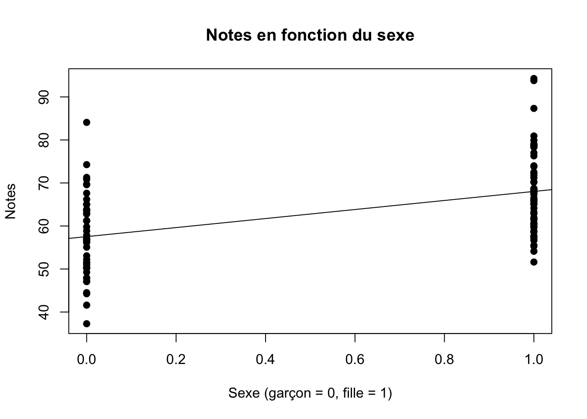
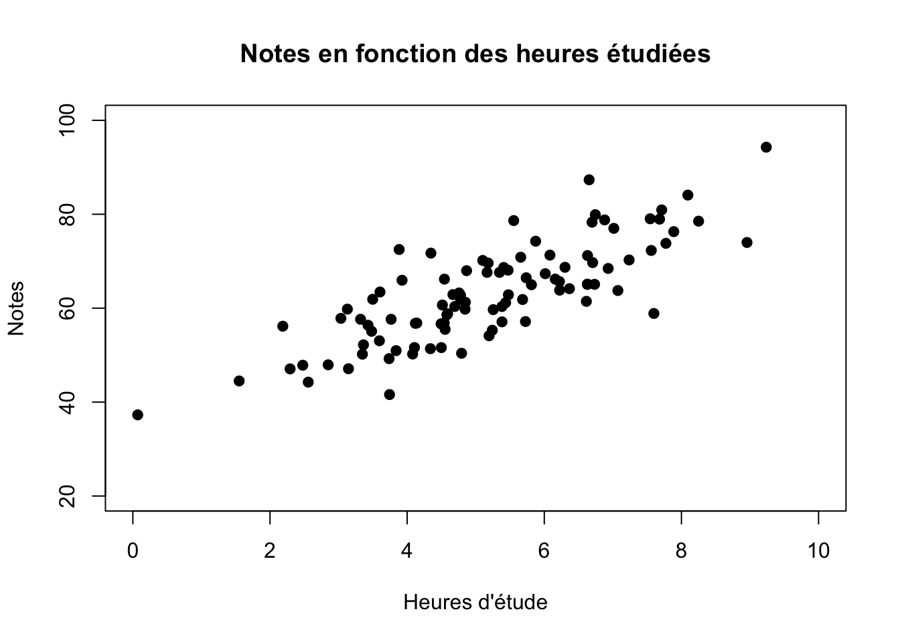
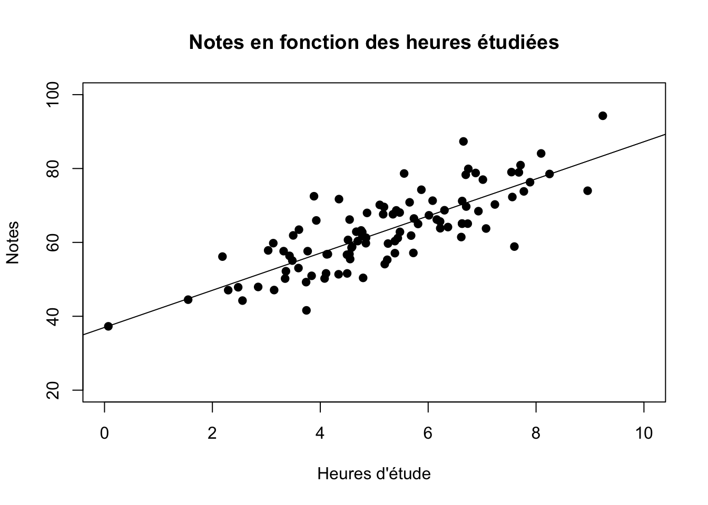
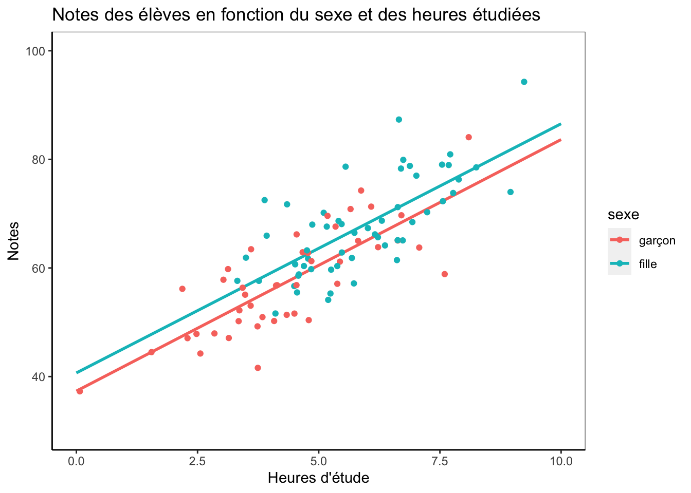
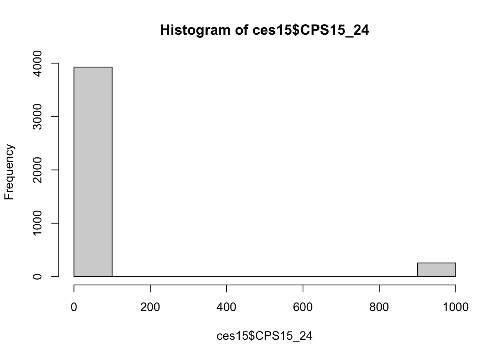
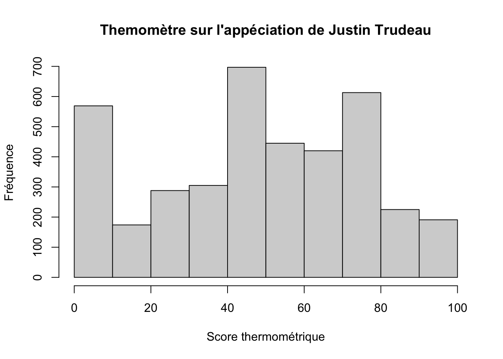

Chapitre 3 Décrire
Si nous voulions décrire la taille de Serge, nous pourrions par exemple dire qu’il mesure 180cm. Si nous voulions décrire la taille de Serge et Janette, nous pourrions dire que Serge mesure 180cm et que Janette mesure 170cm. Si nous voulions décrire la taille de Serge, Janette et Albert, nous pourrions dire que Serge mesure 180cm, Janette 170cm et Albert 160cm. Nous pourrions continuer d’ajouter des personnes et décrire leur taille, mais à mesure que le nombre de personnes augmentera, il deviendra de plus en plus difficile de décrire la taille des personnes qui nous intéressent en se référant à la taille individuelle de chaque personne. Même l’individu le plus intelligent du monde ne parviendra pas à manipuler simultanément dans sa tête les tailles individuelles de 30 personnes (voir même 10). Pour cette raison, décrire des données implique aussi nécessairement les de synthétiser.
Évidemment, on peut décrire un seul élément, mais aussi vouloir décrire la relation entre deux ou plusieurs éléments. En sciences sociales, nous nous intéressons à des choses qui varient. Les choses qui ne varient pas ne nous intéressent généralement pas, justement parce qu’elles ne varient pas. Par exemple, le fait que chaque personne lisant ce texte soit née sur terre (il n’y a pas d’humains né ailleurs que sur terre) est aussi rassurant qu’innintéressant. En statistiques, nous dirons donc que nous nous intéressons aux «variables» qui sont des «choses qui varient» (tadam!), par opposition aux choses qui ne varient pas, qui sont des constantes. Ainsi, lorsque nous cherchons à décrire un phénomène, nous voulons, en termes statistiques, décrire une variable ou des relations entre variables. Concentrons-nous pour l’instant sur la description d’une seule variable.
3.1 Une équation pour décrire une variable
Je voudrais maintenant que vous lisiez l’équation ci-dessous sans lire ce qui vient sous la section «La réponse». Je vais ici décrire ce que veulent dire les symboles et je voudrais que vous réfléchissiez à ce que peut bien vouloir dire cette équation. L’objectif est tout simplement de commencer à vous habituer à réfléchir en termes mathématiques, et surtout de vous faire voir que les formules n’ont rien de magique si l’on prend simplement le temps de s’y arrêter un peu.
3.1.1 Qu’est-ce que cette équation?
\[? = \frac { 1 }{ n } \sum_{ i=1 }^{ n }{ x_i }\] Le signe \(\sum\) peut se lire comme «la somme de tout ce qui vient à droite». \(x_i\) représente la valeur d’un individu \(i\) sur la variable \(x\). Donc, \(\sum x_i\) implique que nous fassions la somme de toues les \(x\) individuels. Imaginez \(x\) comme étant le nom d’une colonne dans un fichier excel et chaque \(x_i\) représente une cellule particulière de cette colonne. Par exemple, \(x_1\) réfère à la valeur de \(x\) à la ligne 1, \(x_2\) la valeur de \(x\) à la ligne 2, etc. \(i=1\) sous le signe de \(\sum\) signifie que la somme qui nous intéresse commence à la ligne 1. Le \(n\) au-dessus du signe de \(\sum\) signifie que nous arrêtons l’addition à \(n\). C’est donc dire qu’ici, nous additionnons toutes les valeurs individuelles de \(x_1\) à \(x_n\), autrement dit les valeurs de \(x\) pour toutes les lignes.
Donc, \(\sum_{ i=1 }^{ n }{ x_i }\) signifie que nous additionnons toutes les valeurs individuelles de \(x\). Nous voyons ensuite que \(\sum_{ i=1 }^{ n }{ x_i }\) est multiplié par \(\frac { 1 }{ n }\).
Réfléchissez un instant à ce que veut dire cette équation avant de passer à la section «La réponse». Qu’est-ce que peut bien nous donner le fait d’additionner toutes les lignes d’une colonne (\(\sum_{ i=1 }^{ n }{ x_i }\)) et de multiplier cette somme par \(\frac { 1 }{ n }\)?
3.1.2 La réponse
L’équation ci-dessus est tout simplement celle qui nous permet de calculer la moyenne d’une variable. Il s’agit de l’équation «officielle». Si vous n’avez pas trouvé la réponse, la raison est probablement que ce n’est pas de cette manière que la plupart d’entre-nous calculons une moyenne. Habituellement, nous faisons la somme des valeurs d’une variable (donc \(\sum_{ i=1 }^{ n }{ x_i }\)) et nous divisons cette somme par le nombre d’unités de cette variable (ou \(n\)). Autrement dit, ce que vous avez probablement tendance à faire est l’équation suivante :
\[\bar{x} = \frac { \sum_{ i=1 }^{ n }{ x_i } }{ n }\] Cette équation est équivalente à la première, mais réfléchissons quelques instants pour bien comprendre pourquoi elles donnent forcément le même résultat.
Les deux équations sont formées de la même somme \(\sum_{ i=1 }^{ n }{ x_i }\) qui est soit divisée par \(n\), soit multipliée par \(\frac { 1 }{ n }\). Si par exemple nous nous intéressions à la taille moyenne d’un groupe de 50 individus, \(\sum_{ i=1 }^{ 50 }{ x_i }\) veut donc dire que nous additionnons la taille de chaque individu (\(x_i\)) pour obtenir la taille totale du groupe en entier. Lorsque vous calculez une moyenne, vous avez probablement tendance a diviser la somme totale du groupe par \(n\), ici le nombre d’individus dans notre groupe, soit 50. En divisant la somme totale du groupe par le nombre d’individus qui le compose, on se trouve donc à «répartir» la taille totale du groupe parmi les 50 individus. C’est tout à fait correct et logique. Cependant, remarquez comment, plutôt que de «répartir» la somme totale sur \(n\), la première équation donne plutôt un «poids» à chaque individu en divisant 1 par \(n\).
Imaginons que la taille totale de nos 50 individus donne 9000cm (\(\sum_{ i=1 }^{ n }{ x_i }\)=9000). La formule que vous utilisez habituellement serait donc \(\bar{x}= \frac{9000}{50} = 180\). Si nous procédons plutôt en suivant la première formule, nous remarquons d’abord que \(\frac{1}{50}\) = 0.02. Dans un groupe de 50, un individu représente donc \(\frac{1}{50}\), ou 0.02 du total des individus. La première formule revient donc à faire \(\bar{x}= 0.02 \times 9000 = 180\).
Avec la première formule, nous voulons donc obtenir une certaine proportion (ici 0.02, ou \(\frac{1}{50}\)) du total des \(x_i\), alors qu’avec la formule «habituelle», on «réparti» ce total sur le nombre d’éléments dont il est composé. Plutôt que de «répartir» la taille totale sur le nombre d’individus, la première formule «pondère» le poids de chaque individu en remenant le «poids» d’un seul individu sur le total du groupe sur une unité de 1 (\(\frac{1}{n}\)). La logique est légèrement différente, mais elle revient au même.
3.1.3 Une équation générale décrivant la variable?
L’objectif de la section précédente était tout simplement de vous faire voir la «mécanique» d’une équation avec quelque chose que la plupart d’entre-vous utilisez régulièrement. L’exemple de la moyenne nous permet aussi de voir comment deux logiques différentes, mais équivalentes, peuvent aussi être écrites de manière différentes mathématiquement. En utilisant le concept de moyenne que la plupart d’entre-vous connaissez bien, je tente de diminuer votre angoisse (Tobias 1993) matématique face aux équations!
Ceci étant, l’un des avantages des équations est qu’elles nous permettent aussi de proposer une description claire et succincte d’une variable. Imaginons que nous voulions décrire la variable \(x\) en une seule équation et de manière la plus complète possible. En conservant notre exemple du groupe de 50 personnes ayant une taille moyenne de 180cm, nous pourrions dire que la moyenne de \(x\) = 180cm et cette information est très certainement utile. Cependant, la moyenne du groupe demeure tout de même une information générale qui n’est pas forcément vraie pour chaque personne, elle nous informe sur le groupe entier, pas sur chaque individu spécifique. Nous pourrions cependant utiliser la moyenne afin de décrire la variable à l’aide d’une équation qui sera «vraie» pour chaque individu. C’est ce que fait l’équation suivante : \[x_i= \frac { 1 }{ n } \sum_{ i=1 }^{ n }{ x_i } + e_i\] Ici, \(x_i\) équivaut encore à la valeur de \(x\) pour l’individu \(i\). Remarquons que la formule est pratiquement identique à la formule de la moyenne, mais nous y avons ajouté \(+ e_i\), où \(e_i\) signifie l’écart de chaque individu \(i\) par rapport à la moyenne (\(\frac { 1 }{ n } \sum_{ i=1 }^{ n }{ x_i } = 180\)).
Donc, si par exemple l’individu 2 mesure 190cm (\(x_2 = 190\)), la valeur de \(e_2\) sera de 10. Ainsi, \(x_2 = 180 + 10 = 190\) et nous voyons que l’équation proposée décrit adéquatement l’individu 2. Si si l’individu 3 mesure 170cm (\(x_3 = 170\)), la valeur de \(e_3\) sera de -10. \(e_i\) équivaut donc à la distance d’un individu par rapport à la moyenne du groupe.
Ces écarts individuels à la moyenne peuvent être mis au carré (pour éliminer les signes négatifs) et additionnés ensemble. Cela nous donne ce que nous appelons la somme du carré des écarts, c’est-à-dire le grand total de tous les \(e_i\) mis à la 2 (\(e_i^2\)). L’une des propriété de la moyenne est qu’elle est le nombre qui minimise cette somme. Aucun autre nombre que la moyenne d’une distribution ne peut donner une somme du carré des écarts plus petite. Une moyenne n’est pas forcément le meilleur nombre à utiliser pour synthétiser une variable, mais la moyenne est systématiquement le chiffre qui est le plus proche de toutes les valeurs individuelles d’une variable donnée. Nous verrons plus tard que la régression présente une caractéristique similaire et il est donc utile que vous compreniez pourquoi cette caractéristique est intéressante à partir du concept de moyenne que vous maîtrisez déjà.
Le concept d’écart individuel à la moyenne est aussi très utile parce qu’il nous permet d’écrire une règle générale qui décrira précisément toutes nos données et ce en tenant compte de la variation individuelle autour de notre moyenne. Pour une équation générale, nous pourrions simplifier encore plus et écrire : \[x_i= \bar{x} + e_i\] Où \(\bar{x}\) (prononcé «x-barre») a simplement remplacé l’équation plus détaillée de la moyenne. La taille précise de l’individu 2 décrit plus haut peut être écrite : \[x_2= \bar{x} + e_2\] \[x_2 = 180 + 10 = 190\]
Vous voyez donc que l’on peut décrire de manière succincte une variable en établissant une caractéristique de cette variable qui s’applique à tout le groupe (ici la moyenne du groupe) et en y ajoutant la déviation (ou l’écart) de chaque individu par rapport à cette caractéristique commune. Ce qui varie d’un individu à l’autre (les valeurs de \(x\) et \(e\)) sont indicés par \(i\) (\(x_i\) et \(e_i\)), alors que ce qui est valable pour tout le groupe (la moyenne) n’a pas d’indice (\(\bar{x}\)). Les indices nous permettent de spécifier plus clairement ce à quoi nous référons. Ceci étant, il arrive fréquemment qu’ils soient omis lorsqu’il n’y a aucun doute sur l’interprétation d’une équation.
Il est fort probable que vous ne décriviez jamais la moyenne d’un groupe d’individus avec l’équation que nous venons de voir, mais l’objectif était simplement de vous faire voir comment on peut formuler une description générale valable pour tous les individus d’un groupe à partir d’une caractéristique commune au groupe. L’idée n’est donc pas ici que vous appliquiez cette formule, mais que vous compreniez le concept derrière l’idée de «déviation» individuelle par rapport à la caractéristique commune. Cette compréhension intuitive vous sera très utile lorsque nous arriverons à la régression.
Il y a bien sûr de nombreuses autres manières de décrire une variable.
- Les mesures de tendances centrales : mode, médiane, moyenne
- Les mesures de variation : étendue, variance, écart-type
- Les mesure d’asymétrie : coefficient d’asymétrie
3.2 Les types de variables et éviter de faire n’importe quoi
La manière la plus adéquate de décrire une variable est aussi liée au type de variable. Les variables peuvent être :
- Nominales
- Une variable qui décrit des états différents qui ne sont pas ordonnancés hiérarchiquement.
- Les catégories doivent être exhaustives et mutuellement exclusives.
- Exemples : la couleur des yeux ou des cheveux. Le choix de vote (PLQ, PQ, CAQ, QS).
- Ordinales
- Une variable qui varie en fonction de différents états qui peuvent être ordonnancés hiérarchiquement, mais dont la distance entre ces états ne peut être réellement établie.
- Exemples : très satisfait, satisfait, insatisfait, très insatisfait. Un peu, beaucoup, pationnément, à la folie.
- Continues (parfois appelées «d’intervalles/ratio»)
- Une variable qui peut être mesurée par une unité standard.
- Exemples: le poids, la taille, la distance, le temps.
- Dichotomiques (parfois appelées «dummy»)
- Comme les variables nominales, mais avec seulement deux catégories.
- Exemples : homme/femme, riche/pauvre, avoir un diplôme uiversitaire/ne pas en avoir.
Contrairement aux variables nominales et ordinales, les variables dichotomiques ont cetains avantages qui viennent du fait qu’elles n’ont que deux catégories. Elles peuvent notamment être taitées numériquement (0 et 1) même si les chiffres 0 et 1 réfèrent à des catégories distinctes qui ne sont pas ordonancées hiérarchiquement. Par exemple, il ne fait aucun sens de faire la moyenne d’une variable nominale ou ordinale : calculer la moyenne de la couleur des yeux des gens dans une classe n’a pas de sens. Par contre, même s’il ne fait pas de sens de calculer la «moyenne du sexe» des gens dans une classe, cette moyenne nous donnera quand même un chiffre interprétable : la proportion d’hommes et de femmes. Par exemple, si nous avons 4 hommes (codés 0) et 6 femmes (codées 1), la moyenne nous donnera \(\frac{6}{10}\) = 0.6, donc la proportion de la catégorie qui est codée 1, ici les femmes. Inversement, nous saurons aussi forcément qu’il y a 40% d’hommes.
Ceci étant, lorsque l’on fait des analyses statistiques, il est important de faire attention au type de variables que nous utilisons si l’on veut les décrire adéquatement. C’est également le cas lorsque nous voulons décrire une relation entre deux variables. Peu importe le type de variable, les logiciels et les procédures statistiques traitent des colones de nombres. Un logiciel n’a aucune idée de ce que ce que ces nombres veulent dire, ni s’il fait du sens de faire la procédure que vous lui demandez d’effectuer.
Si vous avez un groupe d’individus et que vous vous intéressez à la couleur de leurs yeux qui peuvent être bleus (codé 1), bruns (codé 2), pairs (codé 3), ou verts (codé 4); le logiciel vous donnera un résultat si vous lui demandez la moyenne de la couleurs de leurs yeux. Le nombre n’aura aucun sens, mais le logiciel ne le saura pas. Il aura simplement calculé la moyenne des nombre codés de 1 à 4 dans la colone «couleur des yeux» sans savoir qu’ils réfèrent en fait à des couleurs. C’est à vous de le savoir. Nous verrons en chemin que les logiciels peuvent traiter des variables de plusieurs format – par exemple des variables numériques ou des variables de facteur (bleu, brun, pair, vert au lieu des nombres), et ces différents types de variables peuvent être traitées différemment suivant les logiciels. Au final cependant, tout est en quelque part transformé en un chiffre. C’est à vous de vous assurer que le tout fait du sens et aucune procédure statistique ne peut se substituer à votre jugement.
3.3 Décrire une relation entre des variables
Si bien sûr nous pouvons souvent nous intéresser à la description d’une seule variable (par exemple : pour quel parti les gens ont le plus l’intention de voter lors des prochaines élections?), on s’intéresse aussi souvent à la relation entre des variables. La raison en est tout simplement que nous cherchons des explications à un phénomène (une variable) qui nous intéresse et nous désirons donc voir si le phénomène diffère (si la variable varie) en fonction d’un autre phénomène. Pour cette raison, nous nous intéressons souvent aux corrélations entre des variables.
Une mesure souvent utilisée pour évaluer la relation entre deux variables est le coefficient de corrélation. Ce coefficient varie en -1 et 1. Un coefficient de 1 indique une relation positive parfaite, un coefficient de -1 une relation négative parfaite et un coefficient de 0 indique une absence «parfaite» de relation entre les variables. Par exemple, imaginons que nous avons les variables suivantes pouitA, pouitB, pouitC et pouitD :
pouitA <- c(1, 2, 3, 4, 5)
pouitB <- c(6, 7, 8, 9, 10) # Similaire à pouitA, mais de 6 à 10
pouitC <- c(5, 4, 3, 2, 1) # Inverse de pouitA
pouitD <- c(2, 1, 2, 5, 4) # Quelques variations par rapport à pouitAPouiA et PouitB auront une corrélation de 1, alors que PouitC aura une corrélation de -1 avec PouitA et PouitB. À vue d’oeil, PouitD devrait avoir une corrélation d’autour de 0.75 avec pouitA et pouitB, et d’environ -0.75 avec pouitC.
# Corrélation entre PouitA et PouitB
cor(pouitA, pouitB) # cor() pour "correlation"## [1] 1# Corrélation entre PouitA et PouitC
cor(pouitA, pouitC) # Quand puitA augmente, pouitC diminue## [1] -1# Corrélation entre PouitB et PouitC
cor(pouitB, pouitC) # Quand puitB augmente, pouitC diminue## [1] -1# Corrélation entre PouitA et PouitD
cor(pouitA, pouitD) # Quand puitA augmente, pouitD augmente## [1] 0.7698004# Corrélation entre PouitB et PouitD
cor(pouitB, pouitD) # Quand puitB augmente, pouitD augmente## [1] 0.7698004# Corrélation entre PouitC et PouitD
cor(pouitC, pouitD) # Quand puitC augmente, pouitD diminue## [1] -0.7698004# Débarassons-nous de ces pouits...
rm(pouitA, pouitB, pouitC, pouitD) # rm() pour "remove" comme vu plus haut.En règle générale, un coefficient de 0.5 (ou de -0.5) ou plus en sciences sociales est généralement considéré comme relativement fort. Plus le chiffre en termes absolu (c’est-à-dire sans tenir compte du signe négatif ou positif) est élevé, plus la relation est forte. Cependant, nous ne nous étendrons pas ici sur ce coefficient ni sur son calcul puisqu’il est relativement simple et que je souhaite que nous nous concentrions sur la régression, qui est abondement utilisée en méthodes quantitatives. Aussi, faites attention de ne pas confondre les coefficients de corrélation avec les coefficients de régression. Un coefficient de régression de 0.25 (ou même de 0.02) peut être très fort dépendemment de l’échelle de mesure des variables concernées.
Ceci étant, une chose doit être précisée dès le début : la corrélation n’équivaut pas à la causalité! La question de la causalité est très complexe et controversée. Gardons-nous donc d’en discuter et contentons-nous de dire que nous cherchons à comprendre un phénomène qui nous intéresse1. Par comprendre, nous voulons donc dire que nous voulons expliquer ce qui fait en sorte que le phénomène survient ou non, ou mieux décrire comment au juste il survient. Nous avons une certaine thèse sur les facteurs qui font en sorte que le phénomène advient ou n’advient pas, ou qu’il advient d’une manière plutôt que d’une autre. Trois règles logiques doivent minimalement être respectées :
- La chose qui explique le phénomène doit être antérieure (temporellement, logiquement, ou théoriquement) à celui-ci.
- Temporellement : ce qui arrive aujourd’hui ne peut expliquer ce qui est arrivé hier. C’est bêtement logique.
- Théoriquement : Même si une explication potentielle est temporellement antérieure à un phénomène, il faut avoir un argument raisonnable pour affirmer qu’ils sont liés. Cet argument (ou idéalement ces arguments) n’a pas grand-choses à voir avec les statistiques. Il s’agit ici de réflexion théorique et empirique.
- Pour qu’une chose en explique une autre, elle doit lui être liée d’une manière ou d’une autre. Ceci implique donc forcément la présence d’une association entre le facteur explicatif et le phénomène que l’on veut expliquer.
- En méthode quantitatives, cela implique que les deux éléments doivent être associés statistiquement. C’est-à-dire que les valeurs des deux éléments doivent être corrélées.
- Une corrélation peut être positive : quand les valeurs d’une variable sont élevées, celles d’une autre variable ont tendance à être plus élevées.
- Une corrélation peut être négative : quand les valeurs d’une variable sont élevées, celles d’une autre variable ont tendance à être plus faibles, ou inversement.
- Le lien entre le facteur explicatif et le phénomène d’intérêt ne doit pas être fallacieux, c’est-à-dire qu’il ne doit pas être généré par un autre facteur qui explique les deux éléments initiaux.
- Par exemple, si l’on remarque que les dégâts lors d’un incendie sont plus importants lorsqu’il y a plus de pompiers pour le combattre, il serait évidemment fallacieux d’en conclure que les pompiers causent les dégâts. C’est l’intensité de l’incendie qui rend nécessaire la présence d’un plus grand nombre de pompiers pour le combattre et c’est aussi cette intensité qui explique que les dégâts sont plus importants. Le fait qu’il y ait plus de dégâts quand il y a plus de pompiers (une simple association statistique) n’implique absoluement pas que les pompiers produisent les dégâts.
3.4 La régression linéaire simple avec une variable dichotomique
Mon objectif est ici que vous développiez une compréhension intuitive de ce qu’est la régression linéaire et de ce que les résultats veulent dire au juste. Nous n’allons pas nous amuser à calculer à la main des régressions, mais nous allons en faire avec des données que nous créerons nous-mêmes. Pour cette section, oubliez les étoiles et concentrez-vous uniquement les coefficients. Les coefficients permettent de décrire les données, les étoiles ont trait à l’inférence. Or avant d’inférer quoique ce soit, encore faut-il le décrire.
3.4.1 Création des données
Nous allons ici créer des données que nous inventerons nous-mêmes pour fins d’illustration. Nous nous intéresserons aux notes qu’un groupe de 100 élèves ont reçu à leur dernier examen du cours d’introduction à la pétanque full contact (PFC 1000). Nous nous pencherons sur l’impact du sexe des élèves et du nombre d’heures d’étude sur la note qu’ils ont reçu.
La syntaxe ci-bas crée les données et quelques explications sont fournies en annotation. Vous n’avez cependant pas à comprendre cette syntaxe pour comprendre ce qui suivra.
# Pour réplication
set.seed(987654321) # R génère des chiffres aléatoirement et pour
# qu'il le fasse de manière constante d'une fois à l'autre, on
# peut lui dire de le faire d'une manière exacte. Si vous ne le faites pas,
# vous obtiendrez probablement des résultats différents de ceux du document
# tout simplement parce que R génèrera aléatoirement des données un peu
# différentes.
fille <- rbinom(100, 1, 1/2)# créer 100 individus qui ont une chance de
# 1/2 d'être codé 1 dans l'objet "fille", les autres seront codés 0.
heures.etude <- rnorm(100, mean=4.5 + 1.5*fille, sd=1.5 ) # Crée la variable
# heures études avec une moyenne de 4.5, les filles qui étudient en moyenne
# 1.5 heures de plus que la garçons, le tout avec une erreur standard de
# 1.5 pour mettre une peu de variation dans tout cela.
notes <- rnorm(100, mean=35 + 4*fille + 5*heures.etude, sd=6) # Crée la
# variable notes avec une moyenne de 35, avec les filles qui ont en moyenne
# 4 de plus que la garçons, les heures d'études apportant en moyenne
# 5 points de plus par heure, le tout avec une erreur standard de 6
# pour mettre une peu de variation dans tout cela.
sexe <- factor(fille, labels = c("garçon", "fille")) # crée la variable sexe
# à partir de la variable numérique "fille". Sexe sera traité comme un
# facteur ce qui ne change rien mathématiquement mais qui simplifie
# la création des graphiques que nous ferons plus tard (Voir la note de
# bas de page 3).
data <- data.frame(notes, sexe, heures.etude, fille) # place les
# variables dans une même matrice (i.e. un seul object avec 4 colones)
# Utilisons la fonction Head() histoire de mieux voir les données.
head(data) # Nous montre les 6 premières rangées des données## notes sexe heures.etude fille
## 1 56.36004 garçon 3.429696 0
## 2 70.16088 fille 5.102714 1
## 3 61.71704 fille 4.780638 1
## 4 70.84951 garçon 5.656184 0
## 5 72.49611 fille 3.883307 1
## 6 84.08077 garçon 8.094016 0Vous voyez qu’une fois réunie en une seule matrice (comme une feuille d’un fichier excel), nos variables ont chacune une colone et les données individuelles sont en rangées. Le tableau ci-haut ne montre que 6 de ces rangées, mais il y en a une par élève, donc 100 au total. Ayez donc en tête que nos données sont en fait très semblables à un fichier excel dans lequel nos variables sont en colones et les scores de chaque élève sur ces variables sont en rangées. Encore une fois, les logiciels et les procédures statistiques traitent des colones de chiffres. C’est à vous de savoir ce que ces colones signifient et si ce que vous demandez au logiciel a du sens.
Nous pouvons avoir plus de détails sur chacune des variables si nous le souhaitons.
summary(data)## notes sexe heures.etude fille
## Min. :37.28 garçon:44 Min. : 0.07104 Min. :0.00
## 1st Qu.:56.74 fille :56 1st Qu.: 4.10012 1st Qu.:0.00
## Median :62.87 Median : 5.18805 Median :1.00
## Mean :63.41 Mean : 5.25523 Mean :0.56
## 3rd Qu.:69.82 3rd Qu.: 6.61722 3rd Qu.:1.00
## Max. :94.28 Max. :11.28492 Max. :1.00L’objet «data» contient quatre variables (colones) : notes, sexe, heures.etude et fille. La variable sexe est une variable de facteur («factor» ou «character» en anglais dans R) en ce sens qu’elle ne contient pas de chiffres, mais des mots. Les cellules de cette colone contiennent soit le mot «garçon», soit le mot «fille». La variable fille est identique, mais elle est numérique. Ses cellules contiennent un 0 si l’élève est un garçon et le chiffre 1 si l’élève est une fille. R sait que la variable «sexe» est un facteur (elle est «encodée» de cette manière), mais il ne sait pas que la variable fille peut aussi être considérée comme tel puisque cette colone ne contient que les chiffres 0 ou 1. En conséquence, R nous donne des infomrations différentes à propos de ces variables. Ceci étant, qu’elle soit numérique ou en facteur, la variable sexe (ou fille) est dichotomique et il n’y a aucune différence à traiter cette variable comme facteur ou comme des valeur numériques. Ce ne serait cependant pas le cas si nous avions à faire à une variable ordinale ou nominale.
Nous voyons donc qu’il y a 56 filles et 44 garçons. Ce n’est pas 50% pile puisque j’ai demandé à R qu’il y ait un élément aléatoire dans la génération des données afin qu’elles ressemblent davantage à des «vraies» données. Cependant, la loi des grands nombre fait en sorte que si nous avions créé un échantillon plus gros, la proportion se rapprocherait encore plus de 50% de filles et de garçons, puisque j’ai demandé à R d’avoir environ 50% d’élèves de chaque sexe.
Intéressons nous d’abord à la moyenne des notes de tous les élèves. Nous l’avons déjà vu dans le tableau ci-haut, mais demandons tout de même à R de nous donner spécifiquement cette moyenne.
# Puisque la variable «notes» est dans l'objet data, il faut d'abord dire à
# R l'objet, puis la variable avec un signe de $ entre les deux.
mean(data$notes) # Nous demandons la moyenne de notes dans l'objet data## [1] 63.41256Nous voyons donc que la moyenne générale est de 63.4125571. Cette moyenne est-elle différente selon le sexe? La manière la plus simple de répondre à cette question est tout simplement de faire un tableau croisé des notes en fonction du sexe. Faisons-le.
# Nous chargerons ici le premier «package». R est ouvert par défaut avec
# des fonctions qui sont toujours actives, mais afin de minimiser
# l'utilisation de la mémoire ram de l'ordinateur, on doit activer
# les «packages» supplémentaires dont on a besoin dans une session. Cela
# permet d'éviter que des fonctions que nous n'utilisons pas dans une
# session soient actives inutilement. Des «packages» supplémentaires
# peuvent aussi être téléchargés et être ensuite activés au besoin.
# Les packages supplémentaires ne doivent être téléchargés qu'une seule
# fois et ils sont ensuite dans la «library» et sont traités comme
# n'importe quel autre package. Les packages n'ont besoin d'être activés
# qu'une seule fois dans une session.
# Vous pouvez aussi consulter le menu «Packages» dans le panel
# approprié de l'interface R-Studio.
library(dplyr) # Package très utile pour la manipulation des données.
# Tableau croisé des notes moyennes selon le sexe
data %>% # Sélectionne l'objet data puis ...
group_by(sexe) %>% # Regroupe les données par la variable sexe puis...
summarise_each (funs(mean) , notes_moy = notes) # Donne la moyenne## # A tibble: 2 × 2
## sexe notes_moy
## <fct> <dbl>
## 1 garçon 57.5
## 2 fille 68.0Ce tableau croisé nous montre que les garçons ont des notes moyennes de 57.5, alors que les filles ont une moyenne de 68.0. Donc, les filles ont en moyenne de meilleures notes que les garçons dans nos données. Ici, la variable sexe est dichotomique. Si elle est traitée comme étant numérique, elle ne peut avoir que la valeur de 0 (lorsqu’il s’agit d’un garçon) ou de 1 (lorsqu’il s’agit d’une fille). Il n’y a donc personne entre 0 et 1 sur cette variable.
La plupart d’entre vous ont probablement une compréhension très intuitive de la signification du tableau croisé ci-haut. Il nous donne la moyenne des filles et des garçons. Je veux cependant vous démontrer que la régression linéaire peut nous offrir la même information. L’équation de base d’une régression linéaire simple peut s’écrire comme suit : \[ y=a+\beta x \] Où a est l’intercept (aussi souvent appelé la «constante») et \(\beta x\) est le coefficient de régression associé à la variable x. L’intercept correspond à la valeur de notre variable dépendante Y quand toutes les autres variables de l’équation (ici seulement x) ont une valeur de 0. Une formulation plus précise pourrait aussi être écrite comme ceci : \[ y_i=a+\beta x_i + e_i \] Ici, nous disons simplement que la valeur sur y de l’individu i est une fonction de l’intercept a, de l’effet \(\beta\) de la variable x qui varie selon l’individu i, et d’un terme d’erreur e spécifique à chaque individu i. Ce terme d’erreur est similaire à la distance d’un individu par rapport à la moyenne dont nous avons parlé plus tôt.2
Appliquons maintenant cette équation aux données.
m1 <- lm(notes ~ sexe) # Crée l'objet m1 qui contient les résultats d'un
# modèle linéaire (fonction lm() pour "linear model") dans lequel
# la variable note est une fonction (~) du sexe.
summary(m1) # Pour voir les résultats dans l'objet m1##
## Call:
## lm(formula = notes ~ sexe)
##
## Residuals:
## Min 1Q Median 3Q Max
## -20.2474 -7.3035 -0.6993 6.0207 26.5525
##
## Coefficients:
## Estimate Std. Error t value Pr(>|t|)
## (Intercept) 57.528 1.441 39.933 < 2e-16 ***
## sexefille 10.508 1.925 5.458 3.63e-07 ***
## ---
## Signif. codes: 0 '***' 0.001 '**' 0.01 '*' 0.05 '.' 0.1 ' ' 1
##
## Residual standard error: 9.556 on 98 degrees of freedom
## Multiple R-squared: 0.2331, Adjusted R-squared: 0.2253
## F-statistic: 29.79 on 1 and 98 DF, p-value: 3.627e-07Nous voyons donc la valeur de l’intercept a est de 57.5282439 et que la valeur du coefficient \(\beta\) associé à la variable dichotomique sexe est de 10.5077022. La variable sexe est dichotomique: dans nos données un individu est soit un garçon ou une fille. Il y a donc seulement deux options. En termes mathématiques, cela revient à accorder la valeur de 1 à l’une des possibilités et de 0 à l’autre. Dans notre cas, nous avons choisi d’accorder la valeur de 1 lorsque l’élève est une fille et de 0 lorsque c’est un garçon. Nous aurions aussi pu faire l’inverse. Les résultats de la régression auraient été les mêmes, mais le coefficient de 10.5077022 aurait simplement été négatif plutôt que positif («les garçons ont de moins bonnes notes que les filles», plutôt que «les filles ont de meilleures notes que les garçons»).
Nous pourrions aussi visualiser les données.
plot(sexe, notes, main="Notes en fonction du sexe",
xlab="Sexe", ylab="Notes", data=data) Ici, R traite la variable sexe comme un facteur, c’est-à-dire comme une variable qui distingue différents états qui n’ont pas d’ordonnancement numérique. Pour cette raison, la fonction plot() nous donne automatiquement un diagramme en boîte à moustache (c’est le nom!) puisque cela fait plus de sens pour des variables dichotomiques qui marquent des états distincts. Il demeure que cette variable est mathématiquement traitée comme si fille=1 et garçon = 0. Voyons ce qu’une telle figure donnerait si R «pense» que la variable est numérique.
# La variable fille est utilisée ici plutôt que sexe parce que cette
# variable est enregistrée dans R comme une variable de format numérique.
# R la traite donc comme telle. Cependant, gardez bien à l'esprit que
# cela revient mathématiquement au même.
plot(fille, notes, main="Notes en fonction du sexe",
xlab="Sexe (garçon = 0, fille = 1)", ylab="Notes", pch=19, data=data,
abline(m1)) Chaque point est un individu. S’il s’agit d’un garçon, le point est à gauche (à 0) sur l’axe des x, alors qu’il est à droite (à 1) s’il s’agit d’une fille. Il n’y a personne au milieu puisqu’un élève est soit un garçon, soit une fille (raison pour laquelle cette variable est normalement traitée comme un facteur). La hauteur du point nous indique la note obtenue par l’élève. La ligne est l’équation de régression. La distance entre chaque point individuel et la ligne est l’erreur \(e_i\), c’est-à-dire ce qui n’est pas décrit parfaitement par notre équation (la ligne). Nous appelons aussi souvent cette erreur les «résidus».
L’intercept a est la valeur moyenne de notre variable dépendante lorsque notre variable dépendante sexe = 0. Autrement dit, a est ici la note moyenne des garçons, soit 57.5282439. La valeur du coefficient de régression \(\beta\) (prononcé beta) nous indique le mouvement moyen de notre variable dépendante y lorsque notre variable dépendante x augmente de 1 unité. Dans le cas qui nous occupe, «augmenter» de 1 unité signifie être une fille plutôt qu’un garçon. Vous voyez donc que même si \(1>0\) alors que les filles ne peuvent pas être considérées «plus» que les garçons, cela ne fait pas réellement de différence mathématiquement puisqu’une unité peut ici être interprétée comme distinguant ces états qui n’ont pas d’ordonnancement hiérarchique. Cela n’est cependant vrai que pour les variables dichotomiques, qui sont un cas particulier des variables nominales3.
Ainsi, dans le cas qui nous occupe, notre modèle prévoit que la note moyenne des filles sera de \(a+\beta x\), soit de 57.5282439 + 10.5077022= 68.0359461.
Rappelons-nous quelles étaient les moyennes des garçons et des filles dans notre tableau croisé :
data %>%
group_by(sexe) %>%
summarise_each (funs(mean) , notes_moy = notes)## # A tibble: 2 × 2
## sexe notes_moy
## <fct> <dbl>
## 1 garçon 57.5
## 2 fille 68.0Nous constatons que les chiffres sont très exactement les mêmes. La valeur de l’intercept a est égal à la moyenne des garçons ( c’est-à-dire quand le sexe = 0), alors que \(a+\beta x\) est égal à la moyenne des filles. Inversement, nous pourrions aussi dire que dans ce cas, la valeur du \(\beta\) est tout simplement la différence de moyenne entre les garçons et les filles, soit 68.03595 - 57.52824 = 10.50771. Vous voyez donc que notre modèle de régression n’a rien de magique, il décrit tout simplement nos données.
Vous comprendez aussi que lorsque nous proposons l’équation \(y_i=a+\beta x_i + e_i\), ne sommes absolument pas en train de dire que les notes des élèves de notre cours de pétanque obéissent à une sorte de loi immuable de l’univers. Nous disons simplement que les notes de nos élèves varient autour d’une certaine valeur \(a\) et qu’elles ont tendance à être différentes (une différence moyenne de valeur \(\beta\)) en fonction du sexe des élèves. Nous ne savons pas si le sexe des élèves est la cause de la variation des notes, mais nous constatons tout simplement que, dans nos données, les filles ont tendance à avoir de meilleures notes que les garçons. Plutôt que de décrire les données en donnant la moyenne des garçons et des filles séparément (décrire les données avec deux chiffres, les moyennes par groupe), nous avons simplement proposé une équation qui est équivalente.
3.5 La régression linéaire simple avec une variable continue
Jusqu’ici, notre variable dépendante a été dichotomique (garçon = 0, fille =1). Un coefficient de régression nous donne le mouvement dans la variable dépendante associée au mouvement d’une unité de la variable indépendante. Les coefficients des variables dichotomiques sont plus «faciles» à interpréter puisqu’ils s’interprètent tout simplement comme le fait d’être dans un groupe plutôt que dans l’autre, ou la différence entre les deux groupes. Cependant, nous utilisons aussi régulièrement des variables continues, donc des variables dont les valeurs sont ordonnancées hiérarchiquement et dont l’unité de mesure peut être considérée comme standard.4 Faisons donc un modèle similaire, mais en utilisant cette fois le nombre d’heures d’étude de nos élèves.
Commençons par visualiser de quoi ont l’air les données en fonction du nombre d’heures étudiées par semaine.
plot(heures.etude, notes, main="Notes en fonction des heures étudiées",
xlim=c(0, 10), ylim=c(20, 100),
xlab="Heures d'étude", ylab="Notes", pch=19, data=data)
Visuellement, il est assez clair que ceux qui étudient davantage ont de meilleures notes. De manière analogue à ce que nous faisons lorsque nous calculons une moyenne pour synthétiser une vaste quantité d’information, nous pourrions ici vouloir résumer le plus succinctement possible ce que nous observons chez ces 100 élèves. Bien entendu, chaque individu est intéressant, mais nous nous intéressons ici aux notes moyennes des élèves en fonction des heures d’étude. C’est précisément ce que calcule la régression linéaire.
m2 <- lm(notes~heures.etude) # Crée l'objet m2 qui contient les résultats
# d'un modèle linéaire (fonction lm() pour "linear model") dans lequel
# la variable note est une fonction (~) de la variable heure.etude.
summary(m2) # Pour voir les résultats contenus dans l'objet m2.##
## Call:
## lm(formula = notes ~ heures.etude)
##
## Residuals:
## Min 1Q Median 3Q Max
## -16.3271 -3.7251 -0.6483 4.1989 16.8874
##
## Coefficients:
## Estimate Std. Error t value Pr(>|t|)
## (Intercept) 36.981 1.957 18.90 <2e-16 ***
## heures.etude 5.030 0.353 14.25 <2e-16 ***
## ---
## Signif. codes: 0 '***' 0.001 '**' 0.01 '*' 0.05 '.' 0.1 ' ' 1
##
## Residual standard error: 6.227 on 98 degrees of freedom
## Multiple R-squared: 0.6744, Adjusted R-squared: 0.6711
## F-statistic: 203 on 1 and 98 DF, p-value: < 2.2e-16Les résultats de notre modèle nous indiquent que chaque heure d’étude supplémentaire est en moyenne associée à des notes plus élevées de 5.0295675. Un élève qui n’a pas étudié obtient donc, en moyenne, la valeur de l’intercept a, soit de 36.9810477. Un élève qui a étudié 1 heure obtient en moyenne \(a + \beta \times 1\), soit 36.9810477 + 5.0295675 = 42.0106152. Un élève qui a étudié 2 heures obtient en moyenne \(a + \beta \times 2\), soit 36.9810477 + 5.0295675 X 2 = 47.0401827. Un élève qui a étudié 8 heures obtient en moyenne \(a + \beta \times 8\), soit 36.9810477 + 5.0295675 X 8 = 77.2175877.
Voici notre ligne de régression par rapport à nos points. Si vous observez où passe cette ligne, vous constaterez qu’elle est directement sur les «valeurs prédites» que nous avons calculées au paragraphe précédent.
plot(heures.etude, notes, main="Notes en fonction des heures étudiées",
xlim=c(0, 10), ylim=c(20, 100),
xlab="Heures d'étude", ylab="Notes", pch=19, data=data,
abline(lm(notes~heures.etude)))
Tout comme une moyenne résume en un seul chiffre la valeur centrale d’une variable, l’équation de régression linéaire résume en quelques coefficients la relation entre deux ou plusieurs variables. Cette équation correspond tout simplement à une ligne que l’on trace au milieu des points. Encore une fois, l’équation ne signifie absolument pas que le phénomène qui nous intéresse obéit à une loi immuable de l’univers. L’équation ne fait que résumer et décrire ce que nous observons dans les données.
La ligne de régression est calculée de manière à minimiser la somme des erreurs au carré. La somme des erreurs au carré réfère à la somme totale des résidus, soit la distance de chaque point par rapport à la ligne de régression. Cette distance est ensuite mise au carré. Puis, nous faisons la même chose pour tous les points et nous additionnons ces distances pour obtenir la somme des erreurs au carré. Le fait que la régression linéaire minimise cette somme est importante parce que cela veut dire qu’il n’existe pas de meilleure ligne qui puisse décrire ces données. Il n’y a pas de meilleure ligne parce que c’est celle qui est le plus près possible de tous les points à la fois. Vous vous rappelez peut-être que nous disions plus haut que la moyenne a une propriété similaire : une moyenne minimise la somme des écarts à la moyenne au carré. Le principe est ici le même.
Évidemment, l’équation de régression ne décrit pas parfaitement la relation, il y a des points qui ne sont pas directement sur la ligne (il y a des «résidus», des écarts entre chaque point et la ligne), mais souvenez-vous qu’il en était de même pour la moyenne d’un groupe et chaque individu. La régression résume la relation entre nos deux variables de manière à ce que nous soyons capables de manipuler cette information. Encore une fois, il n’y a rien de magique à cela, nous ne faisons que décrire nos données à l’aide d’une équation. J’espère qu’au passage vous commencez à arrêter de faire de l’angoisse devant les équations!
3.6 La régression linéaire avec plusieurs variables indépendantes
Jusqu’à présent, nous n’avons utilisé qu’une seule variable indépendante à la fois. Nous avons vu qu’une régression linéaire avec une variable dichotomique comme prédicteur nous permettait facilement de retrouver les moyennes de nos deux groupes (garçons et filles). Nous avons aussi vu comment une régression similaire qui utilise une variable continue comme prédicteur nous permet aussi de résumer simplement le lien entre une unité de ce prédicteur et la variable dépendante. Nous pourrions cependant nous intéresser au lien spécifique d’une, mais variable en tenant compte d’une ou de plusieurs autres variables. C’est ce que permet la régression multiple.
Cela est important parce que, si par exemple les filles ont tendance à étudier plus d’heures que les garçons et que le nombre d’heures passées à étudier est lié aux notes obtenues, on peut alors se demander si c’est réellement le fait d’être une fille qui fait en sorte qu’elles ont de meilleures notes, ou si cela est simplement lié au fait qu’elles étudient plus. Le problème que nous nous posons ici est similaire à l’exemple de l’ampleur des dégâts lors d’un incendie, du nombre de pompiers qui le combattent et de l’intensité d’un incendie donné plus haut. Nous nous demandons si la relation entre l’une ou autre de nos variables d’intérêts est réelle ou fallacieuse.
Voyons dans nos données le nombre d’heures d’étude en fonction du sexe.
# Tableau croisé des heures d'étude moyennes selon le sexe
data %>%
group_by(sexe) %>%
summarise_each (funs(mean) , h.etude_moy = heures.etude)## # A tibble: 2 × 2
## sexe h.etude_moy
## <fct> <dbl>
## 1 garçon 4.36
## 2 fille 5.96Nous voyons dans nos données que les filles étudient davantage. Les garçons étudient en moyenne 4.36 heures alors que les filles étudient 5.95 heures. Ainsi, on pourra se demander si, dépendamment du nombre d’heures étudiées, les filles obtiennent quand même de meilleurs résultats. Entre d’autres mots, nous pouvons nous demander si une fille qui a étudié 5 heures a en moyenne la même note qu’un garçon qui a étudié lui aussi 5 heures, ou si elle a quand même une meilleure note du simple fait d’être une fille. Pour répondre à cette question, nous allons estimer l’équation de régression linéaire suivante : \[ Y = a + \beta_1X_1 + \beta_2X_2 + e \] Ici, a est encore une fois l’intercept, \(\beta_1\) est le coefficient de régression de la variable dichotomique sexe, \(\beta_2\) est le coefficient de régression de la variable continue _heures.etude et \(e\) est le terme d’erreur individuel, ou ce qui n’est pas expliqué par nos autres variables. Pour aider le lecteur, on pourrait écrire l’équation comme suit : \[ Y = a + \beta_1 sexe + \beta_2 heure.etude + e \] \(\beta_1\) et \(\beta_2\) sont indicés de 1 et 2 pour bien les distinguer, mais les autres variables ne sont pas indicées de i tout simplement parce que l’indice est sous-entendu et ne porte pas à confusion. Il est évident que le sexe et les heures d’étude varient entre les individus.
Estimons maintenant cette équation dans R.
m3 <- lm(notes ~ sexe + heures.etude) # Créer l'objet m1 qui contient
# les résultats # d'un modèle linéaire (fonction lm() pour "linear model")
# dans lequel la variable note est une fonction (~) du sexe
# ET de heure.etude.
summary(m3)##
## Call:
## lm(formula = notes ~ sexe + heures.etude)
##
## Residuals:
## Min 1Q Median 3Q Max
## -13.6705 -4.2615 -0.6981 3.9705 16.0712
##
## Coefficients:
## Estimate Std. Error t value Pr(>|t|)
## (Intercept) 37.3057 1.9227 19.403 <2e-16 ***
## sexefille 3.1023 1.3758 2.255 0.0264 *
## heures.etude 4.6372 0.3872 11.977 <2e-16 ***
## ---
## Signif. codes: 0 '***' 0.001 '**' 0.01 '*' 0.05 '.' 0.1 ' ' 1
##
## Residual standard error: 6.101 on 97 degrees of freedom
## Multiple R-squared: 0.6906, Adjusted R-squared: 0.6843
## F-statistic: 108.3 on 2 and 97 DF, p-value: < 2.2e-16Nos résultats nous indiquent donc qu’indépendamment du nombre d’heures d’étude, les filles ont en moyenne des notes de 3.1023461 points supérieurs aux garçons. Par ailleurs, en tenant compte de la différence entre les garçons et les filles, chaque heure d’étude supplémentaire apporte en moyenne 4.6372014 points de plus. À partir de ces résultats, il est possible d’estimer la note d’un garçon qui a étudié 5 heures en complétant simplement notre équation : \[Y = a + \beta_1 sexe + \beta_2 heure.etude\] \[Y = 37.3057061 + 3.1023461 sexe + 4.6372014 heure.etude\] \[Y = 37.3057061 + 3.1023461 \times 0 + 4.6372014 \times 5\] En résolvant l’équation, on arrive à 60.4917131. Si au lieu d’un garçon on s’intéressait à la note moyenne d’une fille qui a elle aussi étudié 5 heures, il suffit encore de résoudre l’équation en ajustant les chiffres. \[Y = 37.3057061 + 3.1023461 \times 1 + 4.6372014 \times 5\] Nous obtenons alors 63.5940592. La différence entre le garçon et la fille qui ont étudié le même nombre d’heures (63.5940592 -60.4917131 = 3.1023461) équivaut alors précisément à notre coefficient \(\beta_1\) de 3.1023461.
Il peut être difficile de visualiser des résultats de régression multiple sur une surface en deux dimensions. Nous pourrions faire un graphique en trois dimensions, mais la surface sur laquelle il est projeté (du papier ou un écran) demeure bidimensionnelle. La meilleure manière de s’y prendre est d’ajouter de la couleur.
library(ggplot2) # charger ggplot2, super package pour les graphiques
# Notez que le package ggplot2 permet l'ajout d'un +
# en fin de ligne pour lui dire qu'une autre ligne ajoutant des
# éléments à la figure suit. Un + n'est pas nécessaire si
# une parenthèse est déjà ouverte et n'a pas encore été fermée.
# Notez aussi comment la syntaxe est écrite. Les indentations n'ont aucun
# effet sur le résultat, mais ils améliorent la lisibilité. Il est
# beaucoup plus facile de lire une longue parenthèse dans une
# syntaxe lorsque celle-ci est indentée à partir de la première
# parenthèse. Voir après «theme(». Toutes les options dans cette
# parenthèse sont indentées sous celle-ci. Cela est simplement une
# question de lisibilité. Le tout pourrait être écrit en une seule ligne
# interminable (et difficile à lire). Mieux vaut l'écrire en plusieurs
# lignes.
ggplot(data, aes(heures.etude, notes, colour=sexe)) +
ggtitle("Notes des élèves en fonction du sexe et des heures étudiées") +
xlim(0, 10) +
ylim(30, 100) +
ylab("Notes") +
xlab("Heures d'étude") +
geom_smooth(method = lm, se=FALSE, fullrange=TRUE) + # lignes de régression
geom_point() + # les points individuels
theme(panel.grid.major = element_blank(), # Ce qui suit est esthétique
panel.grid.minor = element_blank(),
panel.background = element_blank(),
axis.line = element_line(colour = "black"),
panel.border = element_rect(fill=NA,color="black",
size=0.3, linetype="solid")
)
Nous voyons dans cette figure le résultat de notre régression. Le bleu correspond aux filles et le rouge aux garçons. Nous voyons que leurs droites de régression ont la même pente (\(\beta_2\)) et augmentent de 4.6372014 pour chaque heure d’étude supplémentaire. Cependant, la droite des filles est plus élevée de 3.1023461 par rapport à celle des garçons (\(\beta_1\)) qui débute à l’intercept a, soit à 37.3057061. En observant les points bleus, nous voyons qu’il n’y a aucune fille dans nos données qui a étudié 0 heure (en fait, aucune fille n’a étudié moins de 3 heures), mais nos résultats nous permettent d’estimer la note éventuelle d’une fille qui n’aurait pas étudié. Encore une fois, on trouverait cette valeur précise en résolvant notre équation de régression :
\[Y = 37.3057061 + 3.1023461 \times 1 + 4.6372014 \times 0\] Puisque les heures étudiées sont de 0 (4.6372014 X 0 = 0), cela se simplifie en : \[Y = 37.3057061 + 3.1023461 \times 1\] Ce qui nous donne 37.3057061. Évidemment, il faut être prudent lorsque nous prédisons de la sorte des valeurs en dehors de nos données, mais l’objectif est ici de vous montrer la logique.
3.7 La régression linéaire, un exemple avec des données réelles
Nous avons jusqu’ici utilisé des données fictives que nous avons nous-mêmes créées afin de mieux comprendre l’outil de la régression. Cependant, dans la vraie vie nous utilisons évidemment des «vraies» données. Nous allons ici voir comment une analyse de régression linéaire se fait «dans la vraie vie». Ce faisant, nous verrons qu’il faut préalablement «nettoyer» un peu les données en recodant convenablement les variables avant de procéder. J’utiliserai ici les données des Études électorales canadiennes de 2015. Ces données sont produites lors de chaque élection fédérale et elles sont rendues disponibles gratuitement sur le site internet de l’étude.
Comme nous l’avons fait plus haut, chargeons maintenant ces données.
#rm(list = ls())
# Pour charger des données du format Stata, nous avons besoin du package
# "readstata13" qui inclut les fonctions de transformation nécessaires.
#library(readstata13)
# Chargeons les données.
#ces15 <- read.dta13("CES2015-phone-release/CES2015_CPS-PES-MBS_complete-v2.dta")
library(haven)
ces15 <- read_sav("data/CES2015_CPS-PES-MBS_complete-v2.sav")Nous nous intéresserons à l’appréciation de Justin Trudeau et nous utiliserons ce que nous appelons sa «mesure thermométrique». Nous demandons simplement aux répondants de dire, sur une échelle de 0 à 100 où 0 veut dire qu’ils ne l’aiment pas du tout et 100 veut dire qu’ils l’aiment beaucoup. La question est formulée comme suit:
« Maintenant les chefs de partis. Utiliser la même échelle, où zéro veut dire que vous N’AIMEZ VRAIMENT PAS DU TOUT un chef, et cent veut dire que vous L’AIMEZ VRAIMENT BEAUCOUP.
Que pensez_vous de JUSTIN TRUDEAU?»
Dans les données, cette variable est nommée «CPS15_24», qui est un titre très informatif… Voyons voir de quoi la variable a l’air.
summary(ces15$CPS15_24)## Min. 1st Qu. Median Mean 3rd Qu. Max. NA's
## 0 35 60 109 75 999 20# Faire un histograme
hist(ces15$CPS15_24)
On remarque que pour une variable qui est censée aller de 0 à 100, nous avons des valeurs étrangement élevées. Cela arrive fréquemment. Un coup d’oeil à la documentation fournie avec les données nous indique que les «Ne sais pas» ont été codés 998, et les «Refus» ont été codés 999. R assume que ces réponses sont «valables» et il faut donc nettoyer cette variable en codant ces réponses de manières appropriées. Ici, nous traiterons ces réponses comme des valeurs manquantes, qui sont codées dans R par «NA».
ces15$thermo.trudeau <- as.numeric(ces15$CPS15_24) # Créé la variable
# "thermo.truceau" dans la matrice ces15 en copiant le contenu
# de la variable CPS15_24 dans la matrice data.ces
# J'ai ici utilisé l'option as.numeric() parce que CPS15_24 était
# encodé dans un format "labelled" et nous préférons ici avoir
# simplement les valeurs numériques.
# Recoder les valeurs de la variable thermo.trudeau pour que ce qui
# est plus grand que 100 soit transormé en valeur manquante.
ces15$thermo.trudeau[ces15$thermo.trudeau > 100] <- NA
# Faire un histogramme et préciser les titres
hist(ces15$thermo.trudeau,
main = "Themomètre sur l'appéciation de Justin Trudeau",
xlab = "Score thermométrique",
ylab = "Fréquence"
)
# On aurait pu faire la même chose sans placer la nouvelle variable
# thermo.trudeau dans la matrice de données initiale ces15.
# thermo.trudeau serait alors un nouvel objet en lui-même. Comme ceci:
thermo.trudeau <- ces15$CPS15_24
thermo.trudeau[thermo.trudeau > 100] <- NA
# Cependant, il vaut souvent mieux garder les variables à l'intérieur
# de matrices pour garder de l'ordre dans notre session. Éliminons
# donc l'objet "thermo.trudeau" seul, et utilisons sa copie située dans
# la matrice ces15
rm(thermo.trudeau)Imaginons maintenant que nous nous intéressions à la perception de Trudeau chez les répondants en fonction de leur niveau d’éducation. La variable d’éducation dans les données est nommée «CPS15_79», encore une fois un nom très utile…
table(ces15$CPS15_79)##
## 1 2 3 4 5 6 7 8 9 10 11 98 99
## 5 30 65 321 765 233 930 285 1007 360 165 11 25Encore une fois, cette variable a des codes étranges (98 et 99). Un coup d’oeil à la documentation nous informe sur comment cette variable a été codée:
Quel est le plus haut niveau d’éducation que vous avez complété?
1 aucune scolarité
2 quelques années à l’élémentaire
3 école élémentaire terminée
4 quelques années d’école secondaire
5 école secondaire terminée
6 quelques études au collège, au cégep, au collège classique
7 études terminées au collège, au cégep, au collège classique
8 quelques études universitaires
9 baccalauréat
10 maîtrise
11 diplôme professionnel ou doctorat
98 Ne sais pas
99 Refus
Nous devons donc encore une fois «nettoyer» cette variable, minimalement en recodeant les 98 et 99 en tant que valeurs manquantes.
ces15$educ <- ces15$CPS15_79 # Je créé encore une fois une nouvelle variable
# "educ" dans l'objet ces15qui est une copie de CPS15_79. Elle aura un nom
# plus informatif
ces15$educ[ces15$educ > 11] <- NA # Change les valeurs plus grandes que 11 pour NA
table(ces15$educ)##
## 1 2 3 4 5 6 7 8 9 10 11
## 5 30 65 321 765 233 930 285 1007 360 165Nous pourrions maintenant vouloir une variable d’éducation qui regroupe certains niveaux d’études. Nous pourrions vouloir avoir quatre niveaux d’éducation plutôt que 11.
ces15$educ.gp <- ces15$educ # Copie la variable "educ" dans la nouvelle
# variable "educ.gp"
ces15$educ.gp <- as.numeric(ces15$educ.gp) # Transfoirme en numérique pour éliminer les éléments liés à SPSS
# Créé les différentes catégories
ces15$educ.gp[ces15$educ.gp < 5] <- "Moins que secondaire"
ces15$educ.gp[ces15$educ.gp == 5] <- "Secondaire complété"
ces15$educ.gp[ces15$educ.gp > 5 & ces15$educ.gp <= 8] <- "Post-secondaire"
ces15$educ.gp[ces15$educ.gp > 8] <- "Diplôme universitaire"
table(ces15$educ.gp)##
## 10 11 Diplôme universitaire
## 360 165 3641# On voit que R ordonnance les catégories par ordre alphabétique.
# Cependant, nous pouvons aussi voir que la variable est encore une
# de de classe "labelled" et cela posera problème plus tard.
summary(ces15$educ.gp)## Length Class Mode
## 4202 character character# Nous préférons avoir une variable de classe facteur.
# Je la modifie donc d'abord.
ces15$educ.gp <- as.factor(ces15$educ.gp)
# Si on veut les replacer en ordre "logique" de niveau d'étude
# on fait ceci:
ces15$educ.gp <- factor(ces15$educ.gp,levels(ces15$educ.gp)[c(2,4,3,1)])
table(ces15$educ.gp)##
## 11 Diplôme universitaire 10
## 165 3641 360Finalement, nous pourrions aussi vouloir tenir compte du sexe des répondants. Comme nous l’avons vu plus haut, la variable est RGENDER, que nous avons déjà «nottoyé» plus haut comme suit :
L’intercept correspond ici au score moyen donné par les individus qui ont un score de 0 sur les deux variables indépendantes. Avoir un score de 0 sur la variable sexe signifie qu’on est un homme, mais notez qu’il n’est pas possible d’avoir un score de 0 sur la variable d’éducation que nous avons utilisé ici, puisque celle-ci va de 0 à 11. Il arrive fréquemment que l’intercept ne correspondent à rien de possible et cela n’a pas réellement de conséquence mathématiquement parlant. Il faut simplement faire plus attention lorsque l’on interprète les résultats.
Cela illustre aussi qu’il faut bien réfléchir à comment on code nos variables. Nous aurions pu ici décider de coder notre variable d’éducation pour qu’elle varie entre 0 et 10 (plutôt que 1 à 11) et alors la valeur de 0 sur cette variable (et donc l’intercept) aurait pu correspondre à des cas réels dans les données. Encore une fois, ce codage n’a pas de conséquence autre que la facilité avec laquelle on peut interpréter les résultats. Les résultats ne sont pas soudainement «faux» ou «mauvais» pour autant, ils sont simplement moins intuitifs à interpréter. J’espère aussi que vous voyez pourquoi il vaut souvent mieux coder les variables pour que 0 soit possible.
Vous avez certainement remarqué que R nous donne aussi plusieurs informations quant à l’erreur standard, aux statistiques t, aux valeurs de P et qu’il y a parfois des étoiles à côté des coefficients. Ces informations ont trait à l’inférence statistique et nous traiterons de cela plus loin. Nos données viennent d’un échantillon, et nous voulons inférer quelque chose à la population entière. Or avant d’inférer, il faut décrire adéquatement. Donc pour l’instant, assurez-vous de bien saisir ce que les coefficients de régression veulent dire.
Finalement, on pourrait vouloir créer un beau tableau de régression avec ces trois modèles qui pourrait être intégré à un document MS Word. Le package texreg nous permettra de le faire.
References
Pour un livre intéressant sur cette question et nuancé sur le positivisme général, voir Favre (2005).↩︎
Ceci étant, lors d’une simple équation de régression linéaire habituelle, les indices sont sous-entendus et l’on ne prend donc généralement pas la peine de les écrire. Bien indicer les équations est cependant essentiel quand les variables peuvent varier selon différents éléments. Notamment quand nous avons des données longitudinales où les variables peuvent varier à la fois entre les individus et «à l’intérieur» d’un même individu dans le temps. Avec des variables longitudinales, vous verrez souvent des variables qui varient entre les individus i, et à l’intérieur des individus dans le temps j. Cela peut par exemple donner des variables indicées par ij comme \({x}_{ij}\).↩︎
Les variables dichotomiques sont un cas particulier des variables nominales. Comme les variables dichotomiques, les variables nominales distinguent des états différents qui ne peuvent être ordonnancés hiérarchiquement, mais elles comportent plus de deux possibilités. Un exemple de variable nominale est le choix de vote : PLQ, PQ, CAQ, QS. Ce sont là quatre possibilités distinctes qui ne peuvent être ordonnancées hiérarchiquement. Lorsque l’on veut utiliser une telle variable comme variable indépendante dans une régression, on ne peut pas laisser une telle variable dans un format numérique comme PLQ=1, PQ=2, CAQ=3 et QS=4 parce qu’il n’y a alors aucun moyen de distinguer mathématiquement qu’une unité de cette variable équivaut seulement à un état différent. Il faut alors «dichotomiser» toutes les options (par exemple : PLQ = 1, autres = 0; PQ = 0, autres = 0, etc.) et laisser une catégorie de référence à partir de laquelle les autres options seront interprétées. Nous y reviendrons plus tard. Ceci étant, R peut enregistrer des variables en différents formats, notamment en format numérique et en «facteur» (fator en anglais). Une variable en facteur est une variable qui distingue différents états qui ne sont pas hiérarchisés numériquement, comme le sexe ou le choix de vote. Lorsqu’une variable est enregistrée comme facteur, R dichotomisera automatiquement cette variable lorsqu’elle sera utilisée comme variable indépendante dans un modèle. Vous remarquerez que dans les modèles, j’ai utilisé la variable sexe qui est enregistrée dans R comme facteur, plutôt que la variable fille qui est enregistrée comme étant numérique. Puisqu’il s’agit d’une variable dichotomique, cela revient mathématiquement au même, mais cela a l’avantage de faciliter la création de certains graphiques. Si la variable sexe avait eu 3 catégories (disons garçons, filles et autres), alors la variable numérique n’aurait pas été équivalente à la variable enregistrée en facteur et il aurait impérativement fallu utiliser la variable en facteur dans les modèles.↩︎
Comme nous l’avons vu plus haut, il existe aussi les variables ordinales qui sont ordonnancées hiérarchiquement, mais qui ne sont pas mesurées sur une unité standard. La différence entre les variables numériques et la variable ordinale n’est pas toujours claire et il faut donc faire preuve de jugement lorsque l’on procède à l’analyse statistique. Lorsque l’on détermine qu’une variable doit être traitée comme étant ordinale, elle doit être dichotomisée, comme les variables nominales. Voir la note [^3] pour plus de détails.↩︎